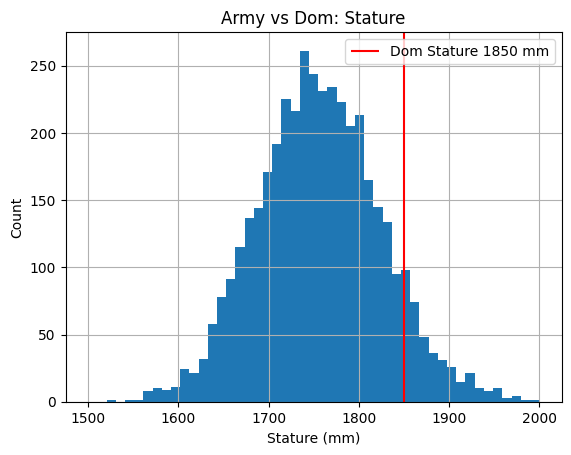

Ratio
Army Stats: count 4082.000000 mean 2.078512 std 0.060762 min 1.880753 25% 2.038863 50% 2.078645 75% 2.118593 max 2.299728 Name: ratio_0, dtype: float64
Dom Ratio: 2.08
Percent from mean: 0.01%
Percent from median: 0.01%
Army Stats: count 4082.000000 mean 2.078512 std 0.060762 min 1.880753 25% 2.038863 50% 2.078645 75% 2.118593 max 2.299728 Name: ratio_0, dtype: float64
Dom Ratio: 2.08
Percent from mean: 0.01%
Percent from median: 0.01%
Army stats: count 4082.000000 mean 1756.214601 std 68.550788 min 1491.000000 25% 1710.000000 50% 1755.000000 75% 1802.000000 max 1993.000000 Name: stature_m, dtype: float64
Dom Stature: 1850 mm
Percent from mean: 18.49%
Percent from median: 18.49%
Army Stats: count 4082.000000 mean 845.929936 std 46.499156 min 702.000000 25% 814.000000 50% 845.000000 75% 876.000000 max 1031.000000 Name: crotchheight, dtype: float64
Dom crotch height (mm): 890
Percent from mean: 8.89%
Percent from median: 8.89%

Stature: 91.43
Crotch Height: 83.19
Ratio: 62.5
The Anthropometric Survey of US Army Personnel (ANSUR 2 or ANSUR II) data were published internally in 2012. They were made available publicly in 2017. They have replaced ANSUR I as the most comprehensive publicly available data set on body size and shape. They include 93 measures for over 6,000 adult US military personnel (4,082 men and 1,986 women). In contrast to the ANSUR I data, the new sample includes reservists. Despite the presence of reservists in the sample, it is still not an approximation of the US Civilian population. Consequently, while there is useful information here, designs and standards based on these data will not accommodate most user populations in the intended manner.